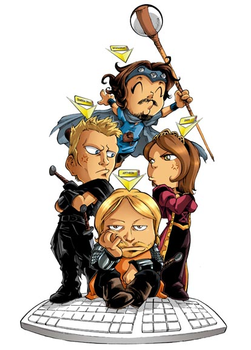
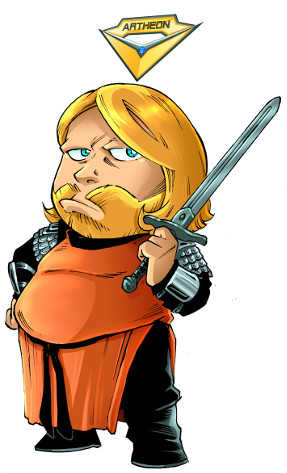
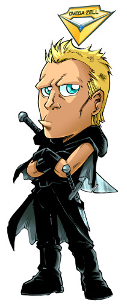
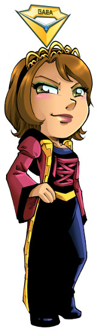
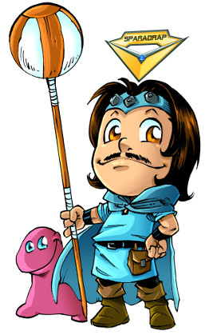

Basé sur l'univers Noob du studio OLYDRI,
Horizon Alpha vous fait revivre la complexité de
diriger l'incomparable guilde Noob. Utilisez les forces et faiblesses d'Arthéon,
Omega Zell, Gaea et Sparadrap afin d'atteindre le niveau 100.
Seulement 2 objectifs :
- Tuez tous les ennemis : 'Les Pas Gentils'.
- Conservez en vie tous les membres de la guilde Noob : Arthéon, Omega Zell, Gaea et Sparadrap.

Arthéon, le Guerrier
Arthéon est le chef de la guilde Noob. Il doit quotidiennement supporter les membres de sa guilde et
litteralement prendre les coups à leur place.
Dans Horizon Alpha, il peut attirer les ennemis vers lui. Dans ce cas, il devriendra la cible prioritaire
en cas d'attaque. En restant immobile, cette compétence se chargera. Les coups reçus diminueront la charge
et ensuite seulement sa vie. Se déplacer fait perdre toute la charge. En l'absence de toute charge,
les ennemis sont libres d'attaquer n'importe quel membre de la guilde.

Omega Zell, l'Assassin
Omega Zell est avant tout arrogant, narcissique, misogyne et méprise les faibles.
Dans Horizon Alpha, sa capacité d'attaquer dépend essentiellement des attaques des autres membres de la guilde.
Plus ceux-ci effectueront des dégats, plus la barre de compétence d'Omega Zell sera remplie et plus il pourra attaquer.
Il peut également sauter son tour afin de recharger sa barre de compétence.

Gaea, l'Invocatrice Elementaire
Gaea est avare et mettra tout en place afin d'éviter de payer, mais surtout afin de gagner encore plus d'argent.
Dans Horizon Alpha, elle peut charger son sort, tour à tour, puis le lancer sur un ennemi. Cependant, à la mort
d'un ennemi, un loot apparaîtra à sa place. Tant qu'un loot est présent sur le terrain de jeu, Gaea ne pourra
pas se concentrer. Elle peut néanmoins se déplacer instantanément pour prendre celui-ci. En cas de déplacement,
ou d'attaques reçues, sa concentration est également brisée et toute charge accumulée est perdue.

Sparadrap, le Prêtre
Sparadrap est maladroit, le plus grand noob de la planète ou un joueur expert cachant ses compétences. Les avis divergent.
Dans Horizon Alpha, sa compétence principale est le soin. Mais voila, pour recharger sa compétence, il doit dans un
premier temps soigner l'ennemi. Si sa barre d'(in)compétence est complétement remplie, le sort de soin deviendra un
sort tuant instantanément le joueur cible, ami ou ennemi.
A propos
Horizon Alpha est un jeu développé afin d'explorer certaines technologies (Clojure, ClojureScript, React et Om). Le code est disponible
sur github.
Le jeu est sous license
Creative Commons Attribution-NonCommercial-NoDerivatives 4.0 International License.
- Les règles du jeu et son implémentation : Copyright 2014 Bertrand Dechoux.
- Le nom de personnages, l'univers, les images : Copyright 2014 OLYDRI Studio.